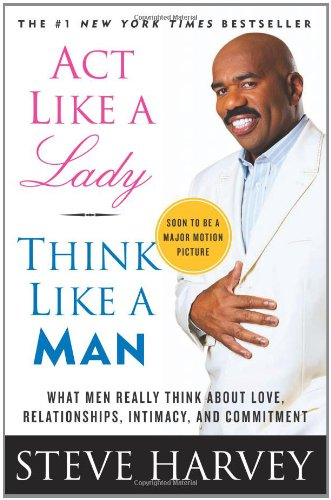

In this book author shares his personal experience, when he was working for radio with the Steve Harvey morning show, he created his own segment “ASK STEVE”, During which women could call Steve and can ask anything they wanted to related to the relationship. When author was starting this section he thought it would be fun and kind of comedy section, but as he started listening to women viewers he realized that most women viewers were going through wasn’t a laughing material, they had many categories of needs and concerns in their lives that they were trying to get a handle on such as dating, commitments, securities, family baggage, hopes for tomorrow, body image, in-laws drama, education, home, work-life balance and so on. The author says after knowing women viewers the one thing he came to know that women want an even exchange with men, they want the same love they show to their men, they want their romantic lives to be as rewarding as they make them for their potential mates.
